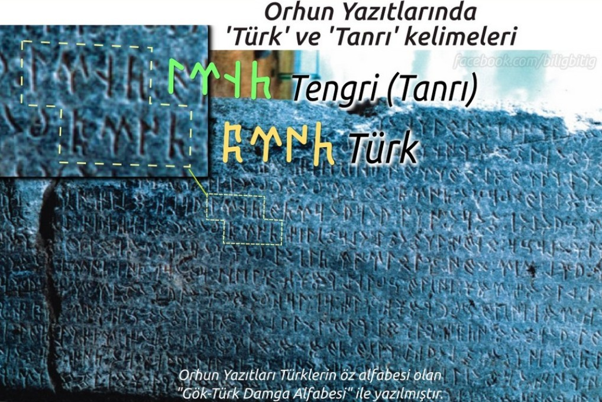
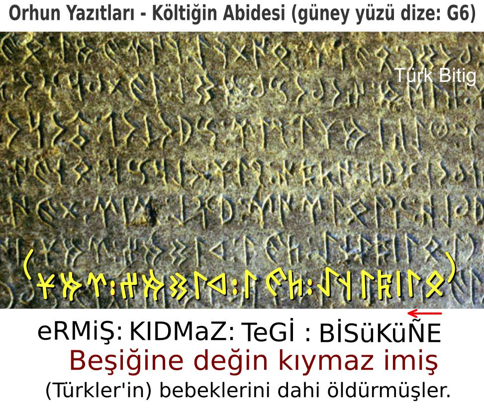
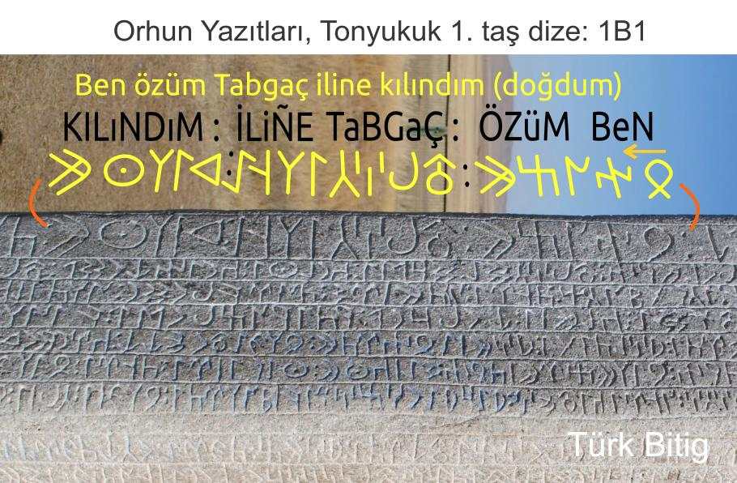
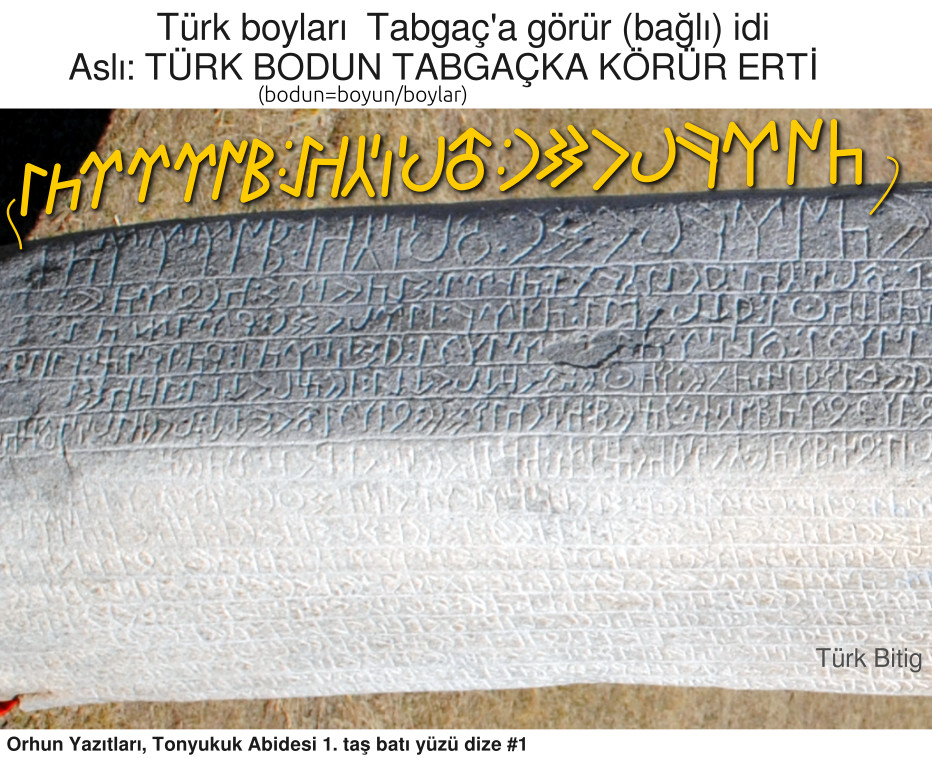
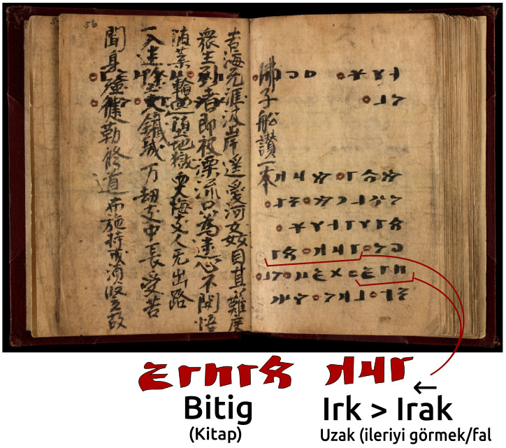

Göktürk Alfabesi
Göktürk Alfabesi Türk dilinin en eski yazı sistemidir. Sağdan sola doğru yazılır. 4 ünlü, 25 ünsüz ve 9 çift sesli olmak üzere toplam 38 harfden oluşur ve çoğu ünzüz harflerin kalın ve ince seslileri vardır. Orhun Yazıtları bu alfabe ile yazılmıştır.
Burada alfabe tablosunu, hece ve yazım örneklerini ve Orhun Yazıtları'ndan orijinal örnekleri inceleyebilir, ve bu alfabenin 1890'larda Danimarka'lı dilbilimci Vilhelm Thomsen tarafından ilk deşifre ediliş süreci hakkında da bilgi edinebilirsiniz.
Ünsüzlerin Kuralları
| Kalın İnce | B | D | G | K | L | N | R | S | T | Y |
|---|---|---|---|---|---|---|---|---|---|---|
| 𐰉 | 𐰑 | 𐰍 | 𐰴 | 𐰞 | 𐰣 | 𐰺 | 𐰽 | 𐱃 | 𐰖 | |
| 𐰋 | 𐰓 | 𐰏 | 𐰚 | 𐰠 | 𐰤 | 𐰼 | 𐰾 | 𐱅 | 𐰘 |
Göktürk Alfabesi'nde 10 ünsüz harfin kalın ve ince biçimi vardır. Bu dilimizdeki "büyük ünlü uyumu" kuralı ile bağlantılıdır.
Büyük-küçük biçimi olan ünsüzlerin kullanımı şöyledir; Bir sözcüğün ilk hecesinde bir kalın ünlü (A, I, O, U) var ise, ünsüzler de "kalın" biçimi ile yazılır. Sözcüğün ilk hecesinde bir ince ünlü (E, İ, Ö, Ü) var ise ünsüzler de ince biçimi ile yazılır.
Örneğin; "BODuN" sözcüğü 𐰉𐰆𐰑𐰣 yazılır, bu sözcüğün ilk hecesindeki "O" kalın bir ünlü olduğu için, aynı hecede bulunan "B" sesinin de "kalın" biçimi 𐰉 yazılır.
Bir başka örnek; "TİGiN" sözcüğü 𐱅𐰃𐰏𐰤 yazılır. Bu sözcüğün ilk hecesinde bir ince ünlü olan "İ" bulunur. Bunun için o hecedeki "T" ünsüzünün de "ince" biçimi 𐱅 yazılır.
| Ç | M | P | Ş | Z |
|---|---|---|---|---|
| 𐰲 | 𐰢 | 𐰯 | 𐱁 | 𐰔 |
Kalın - ince ayrımı olmayan; Ç, M, P, Ş, Z ünsüzleri, tüm ünlüler ile hece kurabilirler. Örneğin “ressam” anlamına gelen 𐰋𐰓𐰕𐰲𐰃 "BeDiZÇİ" deki 𐰔 "Z" ve 𐰲 "Ç“ harfleri ile "gümüş" anlamına gelen 𐰚𐰇𐰢𐱁 "KÜMüŞ" deki 𐰢 "M" ve 𐱁 "Ş" harflerinde kalın-ince ayrımı yoktur ve serbestçe yazılırlar.
Ünlülerin Kuralları
| AE | Iİ | OU | ÖÜ |
|---|---|---|---|
| 𐰀 | 𐰃 | 𐰆 | 𐰇 |
Göktürk Alfabesi'nde toplam 4 ünlü harf vardır. Türkçe'nin 8 ünlü sesini bu 4 harf karşılar.
𐰀 harfi "A" ve "E" seslerini; 𐰃 harfi "I" ve "İ" seslerini; 𐰆 harfi "O" ve "U" seslerini; 𐰇 harfi de "Ö" ve "Ü" seslerini karşılar.
Tabloda görülen ilk iki ünlü harf olan 𐰀 A-E ve 𐰃 I-İ, kelime içindeki ünsüzlerin kalınlık - incelik durumlarına göre kolayca ayırt edilebilir. Çünkü bu harflerin kullanıldığı hece, eğer kalın ünsüzler ile yazılmış işe, kalın sesler (A,I) verirler; ince ünlüler ile yazılmış ise, ince sesler (E,İ) verirler.
Örneğin: "TaŞRA" sözcüğü 𐱃𐱁𐰺𐰀 yazılır. Sözcüğün başında "T" ünsüzünün "kalın" biçimi 𐱃 yazılıdır. Bu da bize, ardından gelen ünlülerin de kalın sesler vereceğini, sondaki 𐰀 harfinin de böylece "A" sesini vereceğini, "E" sesi vermeyeceğini belirtir.
Başka bir örneğe bakalım: "BİLiG" sözcüğünü 𐰋𐰃𐰠𐰏 şeklinde yazarız. Sağ baştaki 𐰋 "B" harfinin ince biçimidir ve ardından gelecek ünlünün de ince olacağını belirtir. Aradaki "L" 𐰠 ve sondaki de "G" 𐰏 de bu harflerin ince biçimleridir, böylece iki ince ünsüzün arasında kalan 𐰃 ünlüsünün ince “İ” sesini vereceğini, "I" sesi vermeyeceğini biliriz.
Şimdi bu 4 ünlü harfi tek tek ele alalım;
𐰀 harfi, kalın ünsüzler ile hece kurunca "A", ince ünsüzler ile "E" sesi verir, kelime aralarında yazılmaz, kelimenin son harfi ise yazılır.
Örnek; "Tabgaça" 𐱃𐰉𐰍𐰲𐰴𐰀 "TaBGaÇKA" ve "keçe" 𐰚𐰲𐰀 "KeÇE" olarak yazılmıştır.
- Not: Günümüz Türkçe'sini yazabilmek için 𐰀 harfini kelimenin baş harfi iken veya ilk hecede iken de yazmak gerekir, 'Adana' 𐰀𐰑𐰣𐰀 "ADaNA" ve "Dana" 𐰑𐰣𐰀 "DaNA" gibi 'benzer' kelimeleri ancak böyle ayrı yazabiliriz.
𐰃 harfi, kalın ünsüzler ile hece kurunca "I", ince ünsüzler ile "İ" sesi verir, ilk hecede yazılır, tekrar eden ara hecelerde yazılmaz, kelimenin son harfi ise yazılır.
Örnek; "içikdi" 𐰃𐰲𐰚𐰓𐰃 "İÇiKDİ" ve "yırıyakı" 𐰘𐰃𐰺𐰖𐰴𐰃 "YIRıYaKI" olarak yazılmıştır.
𐰆 harfi, ilk hecede "O", sonraki hecelerde "U" sesi verir, ince ünsüzler ile hece kurmaz, ilk hecede yazılır, tekrar eden ara hecelerde yazılmaz, kelimenin son harfi ise yazılır.
Örnek;
"yoguru" 𐰖𐰆𐰍𐰺𐰆 "YOGuRU" olarak yazılmıştır.
𐰇 harfi, ilk hecede "Ö", sonraki hecelerde "Ü" sesi verir, kalın ünsüzler ile hece kurmaz, ilk hecede yazılır, tekrar eden ara hecelerde yazılmaz, kelimenin son harfi ise yazılır.
Örnek;
"ötürü" 𐰇𐱅𐰼𐰇 "ÖTüRÜ" olarak yazılmıştır.
İlk hecenin düz ünlüsünden sonra gelen yuvarlak ünlüler yazılır.
Örnek; "altın" manasına gelen aLTUN 𐰞𐱃𐰆𐰣 kelimesinde, kalın düz ünlü olan "A" dan sonra sonra gelen "U" yazılmıştır. Ve yine, "getirdim" manasına gelen KeLÜRTüM 𐰚𐰠𐰇𐰼𐱅𐰢 kelimesinde, ince düz ünlü olan "E" den sonra sonra gelen "Ü" yazılmıştır.
İlk hecedeki yuvarlak ünlülerden sonra gelen düz ünlüler yazılır.
Örnek; OGLITI 𐰆𐰍𐰞𐰃𐱃𐰃 ve SÜÇİG 𐰾𐰇𐰲𐰃𐰏 kelimelerinde, "O" ve "Ü" yuvarlak ünlülerinden sonra gelen "I" ve "İ" düz ünlülerinin yazıldığını görüyoruz.
Not: örnekler Orhun Yazıtları'ndan alınmıştır.
Hece Örnekleri
| kalın | ← | ince | ← |
|---|---|---|---|
| BaŞ | 𐰉𐱁 | BeŞ | 𐰋𐱁 |
| BIŞ | 𐰉𐰃𐱁 | BİŞ | 𐰋𐰃𐱁 |
| BOŞ | 𐰉𐰆𐱁 | BÖŞ | 𐰋𐰇𐱁 |
| kalın | ← | ince | ← |
|---|---|---|---|
| DaN | 𐰑𐰣 | DeN | 𐰓𐰤 |
| DIN | 𐰑𐰃𐰣 | DİN | 𐰓𐰃𐰤 |
| DON | 𐰑𐰆𐰣 | DÖN | 𐰓𐰇𐰤 |
| kalın | ← | ince | ← |
|---|---|---|---|
| GaR | 𐰍𐰺 | GeR | 𐰏𐰼 |
| GIR | 𐰍𐰃𐰺 | GİR | 𐰏𐰃𐰼 |
| GOR | 𐰍𐰆𐰺 | GÖR | 𐰏𐰇𐰼 |
| kalın | ← | ince | ← |
|---|---|---|---|
| KaS | 𐰴𐰽 | KeS | 𐰚𐰾 |
| KIS | 𐰴𐰃𐰽 | KİS | 𐰚𐰃𐰾 |
| KOS | 𐰴𐰆𐰽 | KÖS | 𐰚𐰇𐰾 |
| kalın | ← | ince | ← |
|---|---|---|---|
| TaZ | 𐱃𐰔 | TeZ | 𐱅𐰔 |
| TIZ | 𐱃𐰃𐰔 | TİZ | 𐱅𐰃𐰔 |
| TOZ | 𐱃𐰆𐰔 | TÖZ | 𐱅𐰇𐰔 |
| kalın | ← | ince | ← |
|---|---|---|---|
| YaL | 𐰖𐰞 | YeL | 𐰘𐰠 |
| YIL | 𐰖𐰃𐰞 | YİL | 𐰘𐰃𐰠 |
| YOL | 𐰖𐰆𐰞 | YÖL | 𐰘𐰇𐰠 |
| Karışık heceler ← | |
|---|---|
| KaLeM | 𐰴𐰠𐰢 |
| KeLaM | 𐰚𐰞𐰢 |
| KeMaN | 𐰚𐰢𐰣 |
| KeMaNCI | 𐰚𐰢𐰣𐰲𐰃 |
| Hece Örnekleri | ← | ||
|---|---|---|---|
| BaBA | 𐰉𐰉𐰀 | BeBE | 𐰋𐰋𐰀 |
| BaBaM | 𐰉𐰉𐰢 | BeBeM | 𐰋𐰋𐰢 |
| DaDA | 𐰑𐰑𐰀 | DeDE | 𐰓𐰓𐰀 |
| DaDaM | 𐰑𐰑𐰢 | DeDeM | 𐰓𐰓𐰢 |
| ÇaYIR | 𐰲𐰖𐰃𐰺 | ÇİMEN | 𐰲𐰃𐰢𐰀𐰤 |
| ÇÖMEZ | 𐰲𐰇𐰢𐰀𐰔 | ÇOBAN | 𐰲𐰆𐰉𐰀𐰣 |
| ÇeTİN | 𐰲𐱅𐰃𐰤 | ÇaKaL | 𐰲𐰴𐰞 |
| ÇaYLaK | 𐰲𐰖𐰞𐰴 | ÇIYAN | 𐰲𐰃𐰖𐰀𐰣 |
| KaRA | 𐰴𐰺𐰀 | KeDİ | 𐰚𐰓𐰃 |
| KIZıL | 𐰴𐰃𐰔𐰞 | KİRAZ | 𐰚𐰃𐰺𐰀𐰔 |
| KİBAR | 𐰚𐰃𐰉𐰺 | KÖYLÜ | 𐰚𐰇𐰘𐰠𐰇 |
| KİRLİ | 𐰚𐰃𐰼𐰠𐰃 | KOYuN | 𐰴𐰆𐰖𐰣 |
| SaRI | 𐰽𐰺𐰃 | SÜMBüL | 𐰾𐰇𐰢𐰋𐰠 |
| SeRSeM | 𐰾𐰼𐰾𐰢 | SeRÇE | 𐰾𐰼𐰲𐰀 |
| SİNSİ | 𐰾𐰃𐰤𐰾𐰃 | SİNEK | 𐰾𐰃𐰤𐰀𐰚 |
| SaKaR | 𐰽𐰴𐰺 | SIÇAN | 𐰽𐰃𐰲𐰀𐰣 |
| TeMBeL | 𐱅𐰢𐰋𐰠 | TİLKİ | 𐱅𐰃𐰠𐰚𐰃 |
| TİTİZ | 𐱅𐰃𐱅𐰔 | TeRZİ | 𐱅𐰼𐰔𐰃 |
| TaŞLI | 𐱃𐱁𐰞𐰃 | TaRLA | 𐱃𐰺𐰞𐰀 |
| TOZLU | 𐱃𐰆𐰔𐰞𐰆 | TOPRAK | 𐱃𐰆𐰯𐰺𐰀𐰴 |
| YaLNIZ | 𐰖𐰞𐰣𐰃𐰔 | YeNGeÇ | 𐰘𐰤𐰏𐰲 |
| YeŞİL | 𐰘𐱁𐰃𐰠 | YaPRaK | 𐰖𐰯𐰺𐰴 |
| YİRMİ | 𐰘𐰃𐰼𐰢𐰃 | YILDıZ | 𐰖𐰃𐰡𐰔 |
| YORGuN | 𐰖𐰆𐰺𐰍𐰣 | YÖRüK | 𐰘𐰇𐰼𐰰 |
Not: Göktürk alfabesinin kuralları gereği, "Türk" kelimesi eskiden "Törük" olarak okunur idi. "Törü-" kelimesi Orhun Abidelerinde "türemiş" ve "töre" manalarında da kullanılmıştır ve aynı kökten gelir. Bu nedenle Türk kelimesinin "belli bir atadan türeyen" veya "belli bir töresi olan" millet manasına geldiği düşünülmektedir. Orhun Yazıtları'nda geçen şu metinlere bakınınız.
| Költiğin, dize #D1 (sağdan) |
| 𐱅𐰇𐰼𐰰: 𐰉𐰆𐰑𐰣𐰭: 𐰃𐰠𐰃𐰤: 𐱅𐰇𐰼𐰇𐰾𐰃𐰤: 𐱃𐰆𐱃𐰀: 𐰋𐰃𐰼𐰢𐰾: |
| TÖRÜK: BODuNuŊ: İLİN: TÖRÜSİN: TUTA: BİRMiS: |
| Türk boyunun ilini, töresini tutuvermiş |
Not :Türkçe'de D-Y ses değişimi olmuştur. Adak-Ayak, Bod-Boy gibi.
| Költiğin, dize #K10 (sağdan) |
| :𐰇𐰓: 𐱅𐰭𐰼𐰃: 𐰖𐰽𐰺: 𐰚𐰃𐰾𐰃: 𐰆𐰍𐰞𐰃: 𐰸𐰆𐰯: 𐰇𐰠𐰏𐰠𐰃: 𐱅𐰇𐰼𐰇𐰢𐰾: |
| : ÖD: TeŊRİ: YaŞaR: KİSİ: OGLI: KOP: ÖLGeLİ: TÖRÜMiS:.. |
| Zamanı Tanrı yaşar, Kişi oğlu hep ölümlü türemiş |
Çift Sesli Ünsüzler
| İÇ | NÇ | NG | NY | ND | LD |
|---|---|---|---|---|---|
| 𐰱 | 𐰨 | 𐰭 | 𐰪 | 𐰦 | 𐰡 |
| IK | OK-UK | ÖK-ÜK |
|---|---|---|
| 𐰶 | 𐰸 | 𐰜 |
𐰶 sadece "I" dan önce veya sonra, "ık" veya "kı" sesleri vermesi için kullanılır.
𐰸 sadece "O" ve "U" dan önce veya sonra, "ok/uk" veya "ko/ku" sesleri vermesi için kullanılır.
𐰰 sadece "Ö" ve "Ü" dan önce veya sonra, "ök/ük" veya "kö/kü" sesleri vermesi için kullanılır.
Çift Seslilerin Kullanımı
| Örnekler | ← | ||
|---|---|---|---|
| İÇ | 𐰱 | iÇiN | 𐰱𐰤 |
| NÇ | 𐰨 | KaZaNÇ | 𐰴𐰔𐰨 |
| NG | 𐰭 | TeNGRİ | 𐱅𐰭𐰼𐰃 |
| NY | 𐰪 | KONYA | 𐰸𐰆𐰪𐰀 |
| ND | 𐰦 | KaNDIR | 𐰴𐰦𐰃𐰺 |
| LD | 𐰡 | SaLDIR | 𐰽𐰡𐰃𐰺 |
| IK | 𐰶 | KaZıK | 𐰴𐰔𐰶 |
| OK | 𐰸 | BOZoK | 𐰉𐰆𐰔𐰸 |
| ÜK | 𐰰 | TÖRüK | 𐱅𐰇𐰼𐰰 |
Not: Eski Türkçede "C, F, H, J, V" sesleri olmadığı için, bunları simgeleyen harfler de yoktur. Örnek: "H" sesi yazılmak istenirse bu "K" damgası ile yazılır. "F" sesi için "P" damgası, "V" sesi için "B" kullanılır. Bunlar varsayım olmayıp, zaman içinde oluşan evrilmelerin sonucudur. Ev = eb, fısıltı = pısıltı, han = kan (baş+han = başkan) örneklerinde görüldüğü gibi.
Göktürk Alfabesi Örnekleri
Orhun Yazıtları'ndan Göktürk Alfabesi örnekleri:

Orhun Yazıtları'nda 'Türk' kelimesi böyle yazılmıştır.

Külteğin Abidesi'nin güney yüzü 6. dizeden alıntı.

Orhun Yazıtları Bilge Tonyukuk Abidesi 1. taş güney yüzü 1. dizeden alıntılar.


Irk Bitig kitabı 57. sayfadan alıntı. (9. yüzyıldan kalma)
Göktürk Alfabesi Hakkında
Göktürk Alfabesi, Göktürk Kağanlığı döneminde kullanılan ilk Türk alfabesidir ve 730'lu yıllarda dikilen Orhun Yazıtları dahil çeşitli yazılı taş ve yazma eserlerde Türk dilini yazmak için kullanılmıştır. Bu alfabenin daha sonra gelen Uygur Kağanlığı döneminde de kullanıldığı tespit edilmiştir. Bunun dışında Göktürk alfabesi, değişik biçimleri ile Bulgarlar, Hazarlar, Peçenekler ve Sekeller gibi farklı Türk boyları tarafından da kullanılmış ve Orta Asya’dan Avrupa içlerine kadar yayılmıştır.
Göktürk Alfabesi'nden bize kalan en önemli eserler bugün Orhun Yazıtları olarak bildiğimiz Moğolistan'da bulunan Türkçe yazılı anıt taşlardır. Danimarkalı Türkolog Wilhelm Thomsen, 1893 yılında bu taşlardaki alfabeyi çözerek yazıları okumayı başarmıştır. Yazının eski Türkçe olduğu ve bu anıt taşların Bilge Kağan, Kültiğin ve Tonyukuk adına 730'lu yıllarda dikildikleri tespit edilmiştir.
- Orhun Yazıtları'nı ilk çözen Danimarka'lı Türkolog Vilhelm Thomsen'in 1893 yılında yayınladığı Inscriptions de L'Orkhon Déchiffrées adlı kitabındaki Göktürk Alfabesi, Orhun ve Yenisey biçimleri ile.